Dashboard for Gold
Gold is a precious metal that has been used for centuries in jewelry, currency, and as an investment.
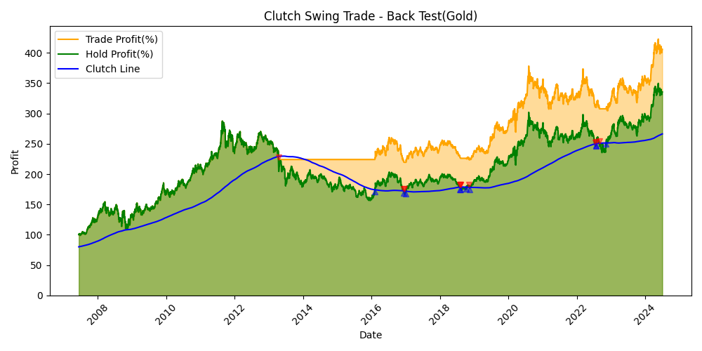
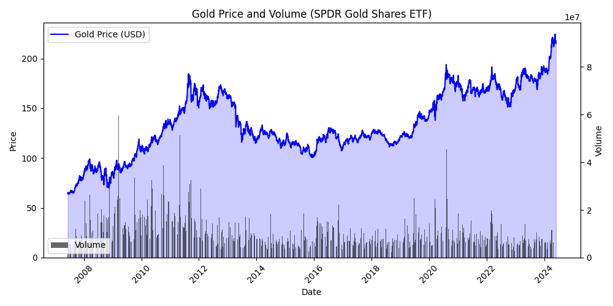
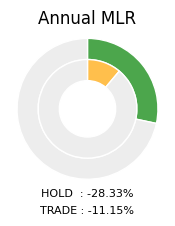
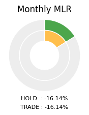
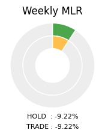
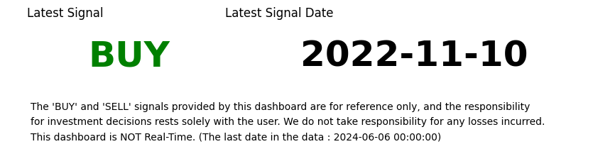
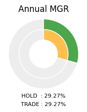
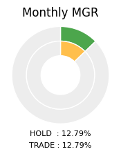
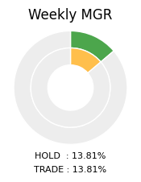
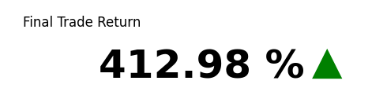
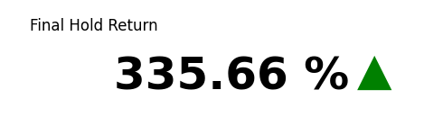
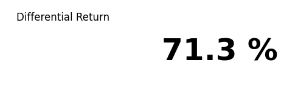
Copyright © 2024 Clutch Swing. All rights reserved.
Reproduction without permission is prohibited.
Documents
This section contains various important documents and files.
NOTICE
• This dashboard is NOT real-time.
• We do not take responsibility for any losses incurred.
• Investment decisions rest solely with the user.
• The 'Buy' and 'Sell' Signals provided by this dashboard are for reference only, and the responsibility
• Always check the date of the latest data.
Clutch Swing Trading Strategy
The Clutch Swing trading strategy leverages the cyclical or patterned movements of asset prices to capture optimal buy and sell points. The goal is to maximize profits and minimize losses by exploiting these price fluctuations.
Buy Signal :
A buy signal occurs when the asset's price drops below the Clutch Line. This indicates that the asset is in an oversold state, suggesting a high probability of price increase, prompting a buy action.
Sell Signal :
A sell signal occurs when the asset's price rises above the Clutch Line. This indicates that the asset is in an overbought state, suggesting a high probability of price decrease, prompting a sell action.
MLR (Maximum Loss Return)
MLR represents the maximum loss rate over a given period. It calculates the percentage decline in asset price from the beginning to the end of a specific period, indicating the largest drop. This dashboard compares the MLR when holding assets continuously versus using the Clutch Swing investment strategy. MLR is crucial for risk management and formulating loss prevention strategies.
MGR (Maximum Gain Return)
MGR represents the maximum gain rate over a given period. It calculates the percentage increase in asset price from the beginning to the end of a specific period, indicating the largest rise. This dashboard compares the MGR when holding assets continuously versus using the Clutch Swing investment strategy. MGR is useful for evaluating investment performance and analyzing potential profitability.
Final Return
The Final Return represents the return rate over the entire period. 'Final Hold Return' indicates the return rate if the assets were held continuously, while 'Final Trade Return' represents the return rate using the Clutch Swing investment strategy. Both are expressed as percentages. Additionally, the Differential Return shows the difference between these two return rates.
 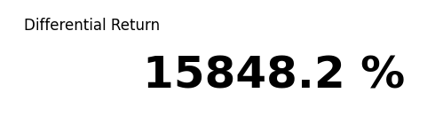
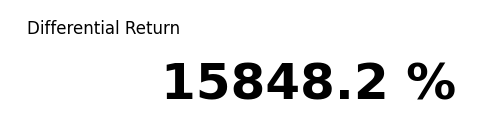